今日天公造美, 讓我們可以安排往坐落在韓國麗水半島的靈鷲山, 無窮花號火車準時在早上午八時三十二分從順天站開出, 於早上八時四十五分便抵達麗川站, 行車時間只是十三分鐘。我們將從這裡乘計程車往靈鷲山的其中一個登山口 — 「진달래기념비」。在 Naver 找不到往這登山口的巴士資料, 所以唯有乘計程車前往。
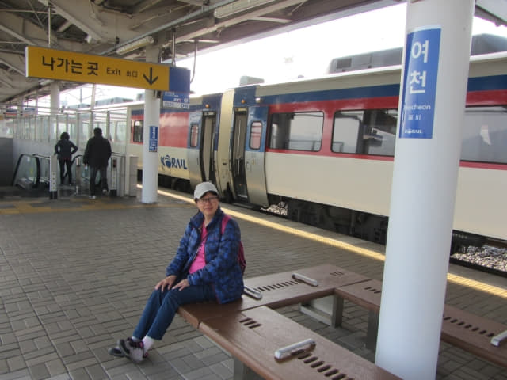
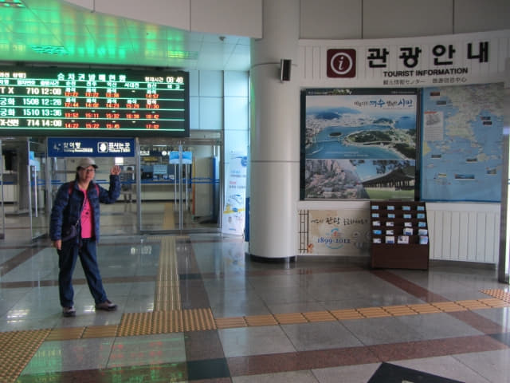
步出麗川火車站, 已經看見右邊有很多計程車在排隊等候乘客, 頓時安了心, 起碼不用再花時間四處找計程車, 一切十分順利, 看來今天有一個好開始, 希望這好運繼續下去, 讓我們順利完成整個靈鷲山登山行程。
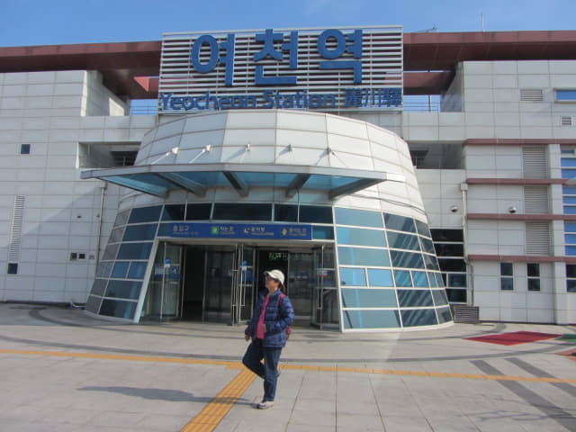
麗川火車站前廣場有麗水遊覽地圖, 但沒有靈鷲山的標示。
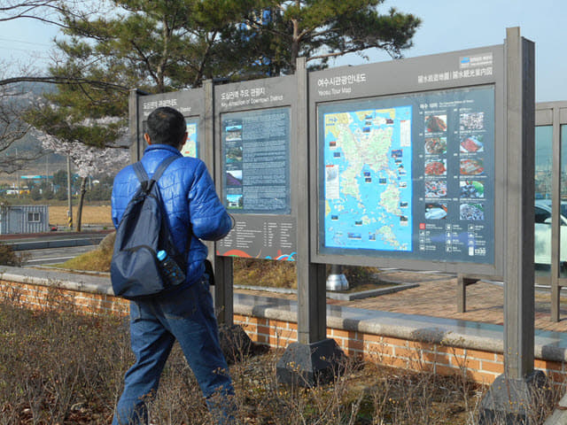
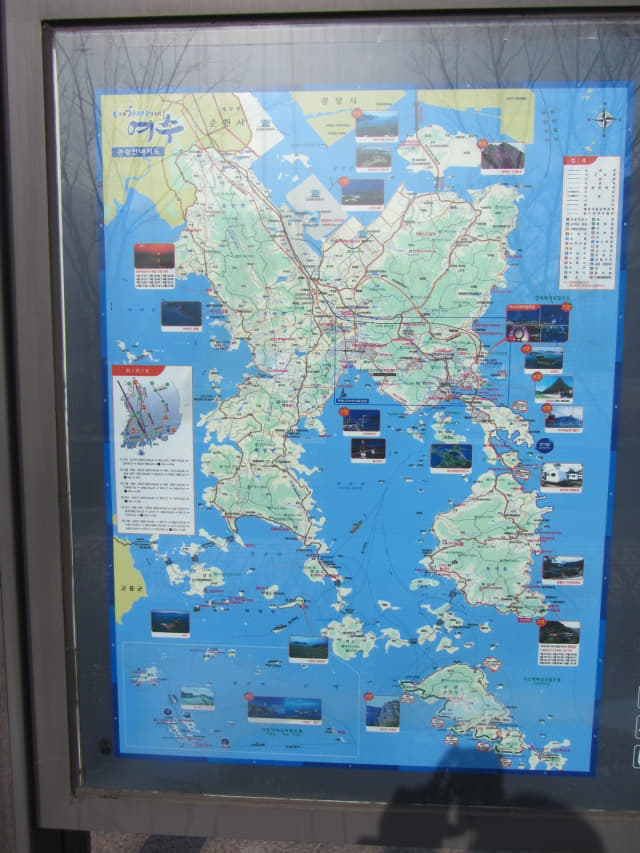
乘計程車往 靈鷲山 「진달래기념비」登山口
接著走到計程車候車處, 從衣袋中取出靈鷲山的地圖, 遞給司機看, 並指著「진달래기념비」這地方。最重要的時刻來臨了, 能否成功完成這登山路線看這一刻了! 如果司機不明白, 這行程便可以馬上宣佈告吹了!
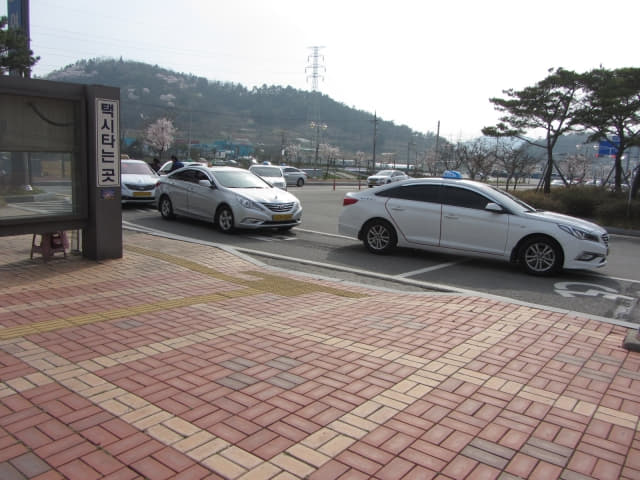
從 Naver Map 所示, 靈鷲山有五個以上的登山口, 「진달래기념비」只是其中一個, 其實地圖上沒有這登山口的名稱, 只是從某一個韓國網誌, 得悉這地方可能稱為「진달래기념비」, 就是單靠這粗略的推斷, 決定了從這登山口登上靈鷲山。如果「진달래기념비」不是地圖上所標示的地方, 而是另一個地方, 那麼便會影響整個登山行程, 甚至可能要取消!
司機看了一會, 好像知道「진달래기념비」在那裡, 示意叫我們上車。
約早上八時五十二分, 戰戰兢兢的登上了計程車, 沿途交通十分疏落, 車速很快, 約十分鐘後, 好像進入了荒蕪地帶, 再過一會, 左邊明顯是重工業區, 接著閃出一個個白色圓形的建築物和粗壯的喉管, 根據我的知識, 白色圓形的建築物是儲油槽, 粗壯的喉管是輸油管線, 所以應該是煉油的地方, 面積很大, 看不到盡頭的, 想不到竟然有機會近距離欣賞煉油設施, 真是意外收穫….., 當我把所有注意都放在左邊的煉油區時, 計程車在一個路邊停下來, 表示到達「진달래기념비」了, 車資約 9,000韓元。
望望窗外, 頗為荒蕪, 這裡便是靈鷲山「진달래기념비」登山口? 付了車資, 帶著懷疑的下了車。馬路對面仍然是煉油區的範圍, 可想而知面積是多麼大! 既然來到, 當然順便參觀煉油區, 總算是新的體驗。
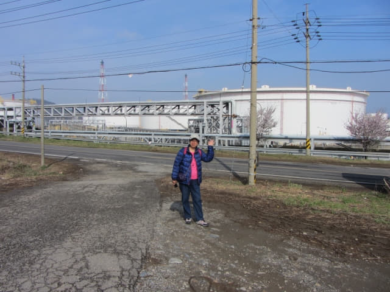
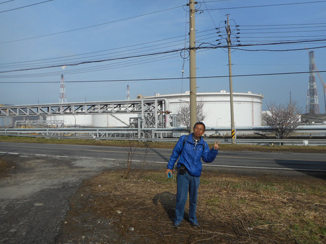
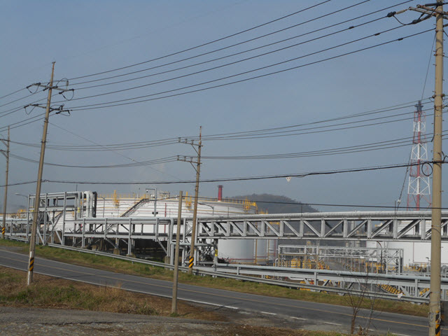
看見前面叢林中有幾個帳篷, 便朝那方向走去。後面連綿的山巒應該是靈鷲山吧! 按計劃, 我們便是跨越層層疊疊山脈, 到達另一邊山麓的興國寺。看來很遠, 其實只要一步一步向前走, 始終可以到達目的地。
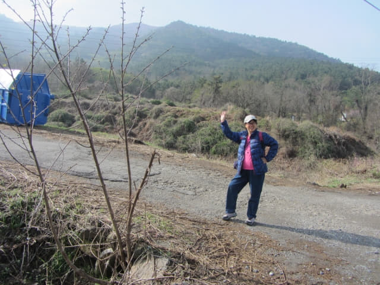
不時回頭望望馬路對面的煉油區。
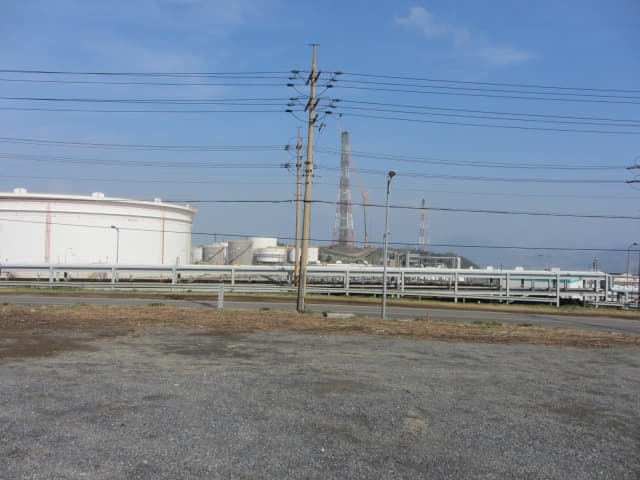
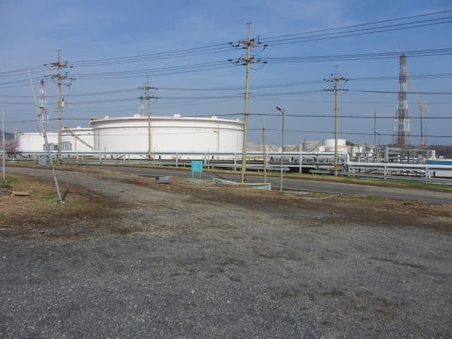
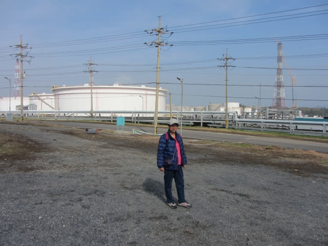
終於確定這裡便是 靈鷲山「진달래기념비」登山口!
叢林路邊旁豎立了一幅彩色巨型地圖, 看來是登山路線圖, 圖中紫色的地方明顯是杜鵑花群最集中的五個區域, 看來應該來對了其中一個靈鷲山的登山口, 只是地圖上沒有「진달래기념비」這幾個字, 還不肯定是否來對了我們想去的那一個登山口。
再看看我們的靈鷲山「진달래기념비」登山口地圖, 發覺路邊彩色地圖的方向是倒轉的, 便唯有反轉我們的地圖來核對和確認這裡是否就是靈鷲山「진달래기념비」登山口。
比較了兩個地圖上的幾個主要地點: 가마봉、靈鷲山山頂、봉우재、興國寺, 發覺位置非常吻合, 得出一個結論:
這裡便是我們地圖上的靈鷲山「진달래기념비」登山口!
碓定了這裡便是靈鷲山「진달래기념비」登山口, 接著可以按出發前的登山路線進行了!

{kind=link}
{kind=link}
{kind=link}